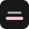

Sub Translator
自动识别原声语言，把 YouTube 的字幕译成你一眼看懂的那一种，默认双语对照。
模型与接口
本卡片的五项属于当前配置，其余设置全局共享。切换配置会重翻已有字幕。
OpenAI 兼容接口，填到 /v1 即可。已是完整路径就在结尾加 #。
只存在本机浏览器里，不同步、不外发。
换模型只改这里，别的设置不用动。
只决定用哪个字段名发给服务商，强度在弹窗里选。只有第一项能真正关掉推理，服务商报 400 时才换其他项。
省 token
分批、预翻译范围、并发、上下文、缓存都已按长播客调好，不再单独开放。这里只管缓存留多久。
这么久没再看过才清理，重看会重新计时。
超出时先淘汰最久没看的。
字幕外观
So the question I keep coming back to is what intelligence really is, and whether we would even recognise it.
所以我一直绕回来的那个问题是，智能到底是什么，以及我们是不是真能认出它来。
原文与译文同色，只靠字号分主次。
最左端为全透明，只剩描边文字。画面亮的视频建议留一点。
框宽自适应，这里设上限；越宽长句折行越少。
视频里把鼠标移到字幕框上：圆点拖位置，竖线拖宽度，双击复位。
数据
—
恢复默认
把所有设置改回出厂值，不动缓存和用量统计。
点两下确认，不可撤销。